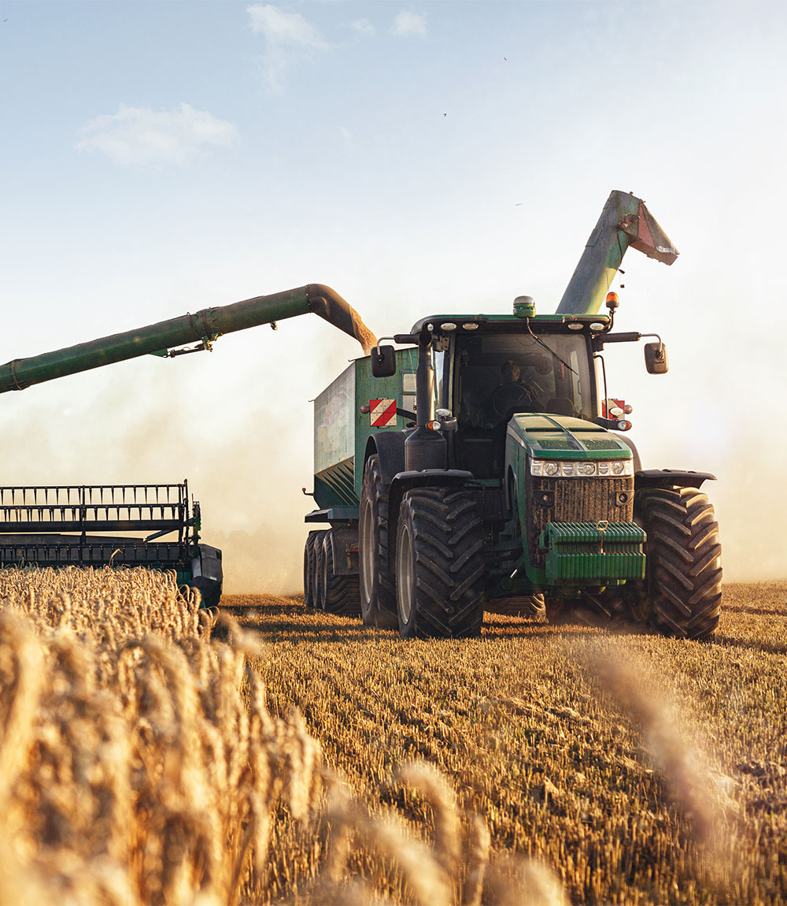
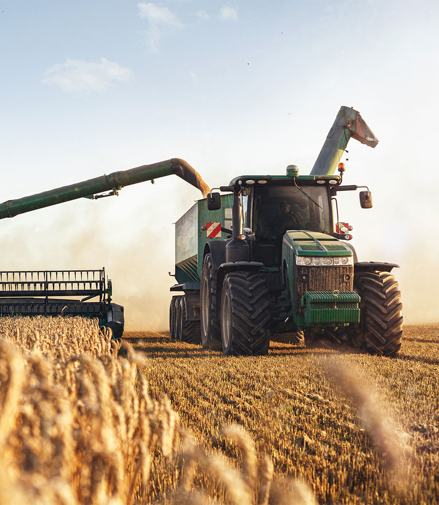

Operadores
O início da atividade o produtor biológico deve proceder à notificação da Direção-Geral de Agricultura e Desenvolvimento Rural (DGADR), aquando da adesão a este regime, ou seja, quando o operador biológico inicia esta atividade.


Esta notificação é obrigatória, sendo necessária para as autoridades e organismos de controlo (OC) manterem uma lista atualizada dos nomes e endereços dos operadores biológicos sob o seu controlo, por forma a a verificar de uma forma sistemática o cumprimento das regras de produção.
A responsabilidade desta notificação é do operador biológico, devendo o organismo de controlo e certificação verificar se foi realizada esta notificação e se esta se mantém atualizada todos os anos. O formulário da notificação encontra-se disponível no sítio eletrónico da DGADR, na página da produção biológica e deve ser submetido por essa via para produzir efeitos.
Com a notificação da atividade, o operador biológico compromete-se a respeitar o conjunto das disposições comunitárias e nacionais que regulamentam o modo de produção biológico, bem como, quando aplicável, a legislação em vigor relativa à produção, preparação, armazenagem, comercialização, rotulagem e publicidade dos produtos agrícolas e dos géneros alimentícios em geral. Compromete-se ainda a aderir ao sistema de controlo do modo de produção biológico, contratualizando com um organismo de controlo (OC) reconhecido para este efeito, ou seja que lhe foram delegadas competências de controlo neste âmbito.
A responsabilidade desta notificação é do operador biológico, devendo o organismo de controlo e certificação verificar se foi realizada esta notificação e se esta se mantém atualizada todos os anos. O formulário da notificação encontra-se disponível no sítio eletrónico da DGADR, na página da produção biológica e deve ser submetido por essa via para produzir efeitos.
Com a notificação da atividade, o operador biológico compromete-se a respeitar o conjunto das disposições comunitárias e nacionais que regulamentam o modo de produção biológico, bem como, quando aplicável, a legislação em vigor relativa à produção, preparação, armazenagem, comercialização, rotulagem e publicidade dos produtos agrícolas e dos géneros alimentícios em geral. Compromete-se ainda a aderir ao sistema de controlo do modo de produção biológico, contratualizando com um organismo de controlo (OC) reconhecido para este efeito, ou seja que lhe foram delegadas competências de controlo neste âmbito.